Bumper Carnival
About
Bumper Carnival is a zany and action-packed bumper car brawler for all ages. Players will choose their loadout by selecting weapons and vehicle classes to pit their car against their friend or AI. The last one remaining wins! Choose from a variety of different maps all with their unique features and challenges.
Features
- Car customization including color, weight class, and 4 different weapons
- 4 Unique Stages
- Local Multiplayer
- AI bots to practice against
- Controller Support
Development
This game was developed using Unity and C# by a team of 5 including myself. The project intially started as a class project but was then expanded upon in a production studio ultimately leading to around 5 months of total development time. The game was then presented at the Imagine RIT festival at Rochester Institute of Technology. This was by far the most fleshed out game any of us had ever made due to the amount of time and resources we were able to sink into it. The team dynamic was great due to the fact that all of us were friends, leading to a lot of shared roles and helping out in all areas of development.
There is still plenty of room for future development with this game, including enhanced physics to allow for stages to include slopes and ramps, better collision detection and resolution for more satisfying hits, more loadouts, more cars, more characters, more stages, different gamemodes, etc. As the main lead behind physics, I still have work cut out for me to perfect our physics system to produce the most satsfying experience. We've gotten the game to a great point, but there's a ton more to do. I am still most proud of this project out of all of my work.
My Contributions
- Physics Programming
- 3D Modeling
- Texture Production
- Custom Shaders
- Stage Design and Programming
- Gameplay Programming
Line Drive
About
Line Drive is a golfing puzzle game designed for mobile. Players must use their finger to draw lines to guide the ball to the hole. Use your toolbox of drawing abilities and speed boosts wisely to rack up the best score. With over 20 levels and multiple customization options, there's plenty to keep you busy when you want a quick game break on the go.
Features
- 20+ Levels
- Customization options
- Android and iOS support
- Rigidbody physics
Development
This game was developed using Unity and C# by a team of 4 including myself. It began during a class I took at RIT named Casual Game Development. The structure of the class was set up into three 4 week sprints where we design a casual game during each of the sprints. We also received two weeks at the end of the semester to polish one of our three games, and we chose this one.
We used Unity's physics system which definitely sped up production. Just after 1 week, line drawing with proper collision was implemented as well as speed boosts and holes. After the first week, we could focus our attention on cleaning up the UI and implementing more holes as well as customization. Playtests in class allowed us to tweak physic values, adjust the UX, and gain new ideas for level mechanics. Production went pretty smoothly and we were all really happy with how the game turned out. This game was my brainchild so I was real excited to develop it.
My Contributions
- Physics Programming
- UI Design
- UI Functionality
- Level Design
- Scoring System
- Gameplay Programming
Skyrim Mod
About
A band of hunters has gone missing on an island to the east, driven away from their camp during the night by an unknown foe. Uncover the fates of the hunters, slay the stalker on the island, and collect a unique armor set made with some of the finest hides in the land. May Hircine watch over you, Dragonborn.
Features
- 4 Unique Subquests
- New Armor Set
- Custom Assets and Dialogue
- New Worlds to Explore
Development
This mod was developed during a special running of IGME 590 at RIT. The class was solely devoted to making a mod for The Elder Scrolls V: Skyrim. The class was divided into 5 groups of 5 and each of our teams worked on a specific subquest in the mod, with one group managing the overarching quest. My team was responsible for the fourth and final subquest: "Stuck Between a Wererock and a Hard Place". It was a very unique class as it required communication and cooperation with all 25 students, rather than just your own group. Everyone was fairly new to modding so it was a class effort to learn and share knowledge of the Skyrim Creation Kit together.
In my team, I was mostly responsible for asset modifications. My main work consisted of retexturing the armor set to create our own unique look as well as creating stone variants of Skyrim's werewolves and werebears and creating the bloodmoon transition effect. Working with Bethesda's assets was certainly a challange, as all of their filetypes are proprietary. Texture files are coded as .dds and 3D models are packaged as .nif. This required special tools to be able to modify the existing assets.
My Contributions
- Armor Retexture
- Werewolf and Werebear Statues and FX
- Bloodmoon FX
- Papyrus Scripting
- Some Level Design
Photo Gallery
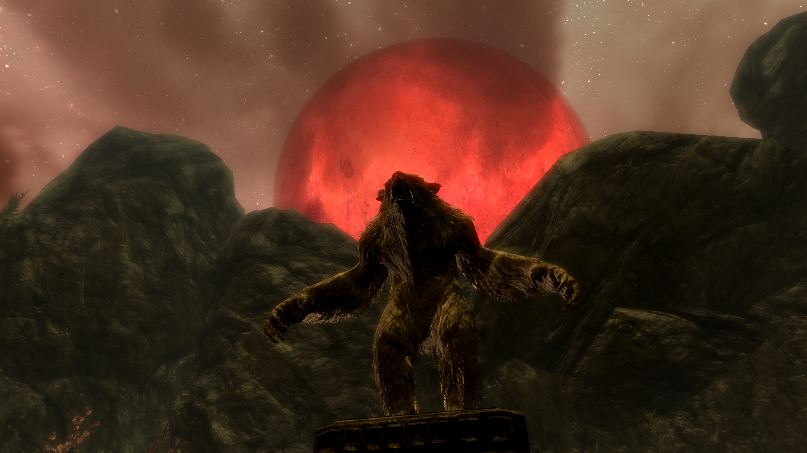View of the Bloodmoon rising above the grotto in our quest
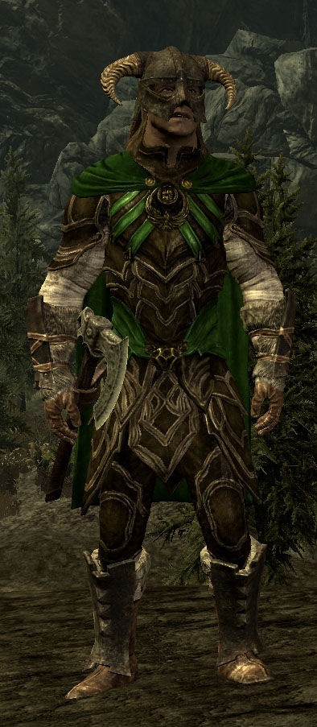The retextured armor cuirass I made for the mod
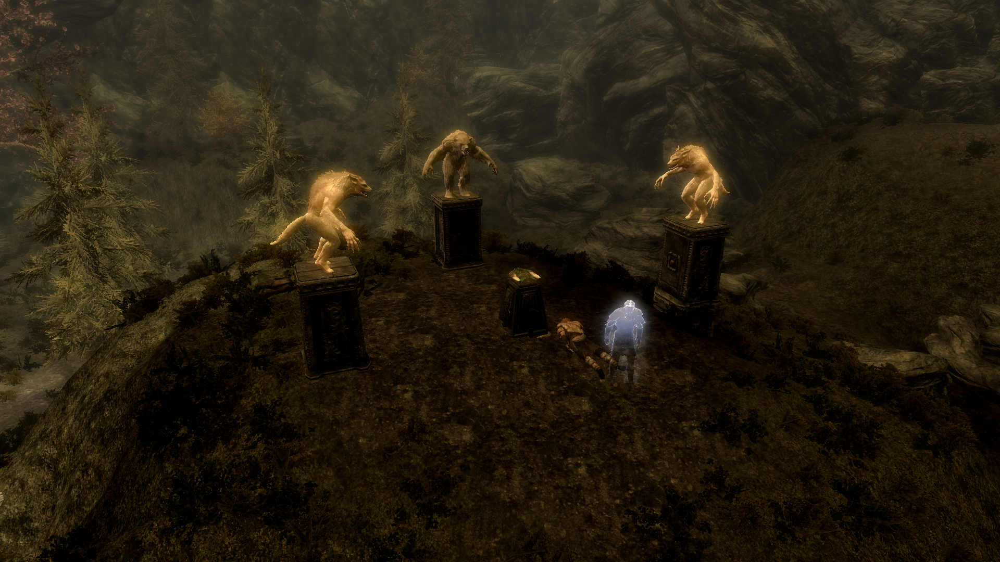The two werewolf statues and one werebear statue shatter into live enemies during the final wave of fighting

Our quest takes place in an enclosed grotto that plays like an arena
Snowboarding Simulator
About
Feel the rush of snowboarding in this simulation style game! Step onto the physical board to lean and turn your way down the mountain through a giant slalom course. The Nintendo Wii remote attached to the simulated board will track your movements and translate those to in game movements. Try to get down the course as fast as possible to score the best time!
Features
- Physcial platform controller that allows you to spin 360 degrees and lean side to side to simulate the real movements of snowboarding
- Movements captured by on-board Nintendo Wii remote
- Race down a slope and pass through gates in a slalom course
- Score calculated by total time and gates passed
Development
This proof-of-concept project was a result of a solo independent studio during the spring of 2017. The game was developed in Unity using C# and a Nintendo Wii remote as a controller. I used the Unity-Wiimote plug-in to get input from the Wii remote into the Unity engine. The platform consisted of a longboard with a Wiimote attached to the bottom and the longboard was positioned on a turn table. This allowed for both the rotational and leaning movements.
In all, the project was a good learning experience into using motion controls. The Nintendo Wii remote was not the best accelerometer to use for motion controls, as it would very consistently get disoriented and constantly require zeroing out. The physical platform itself was very jerry rigged and not very user friendly. The physics were decent but the controls where really what messed with the gameplay. There is a lot of room for improvement but it was a successful proof-of-concept using a Wiimote in Unity and experimenting with physical controllers.
Photo Gallery
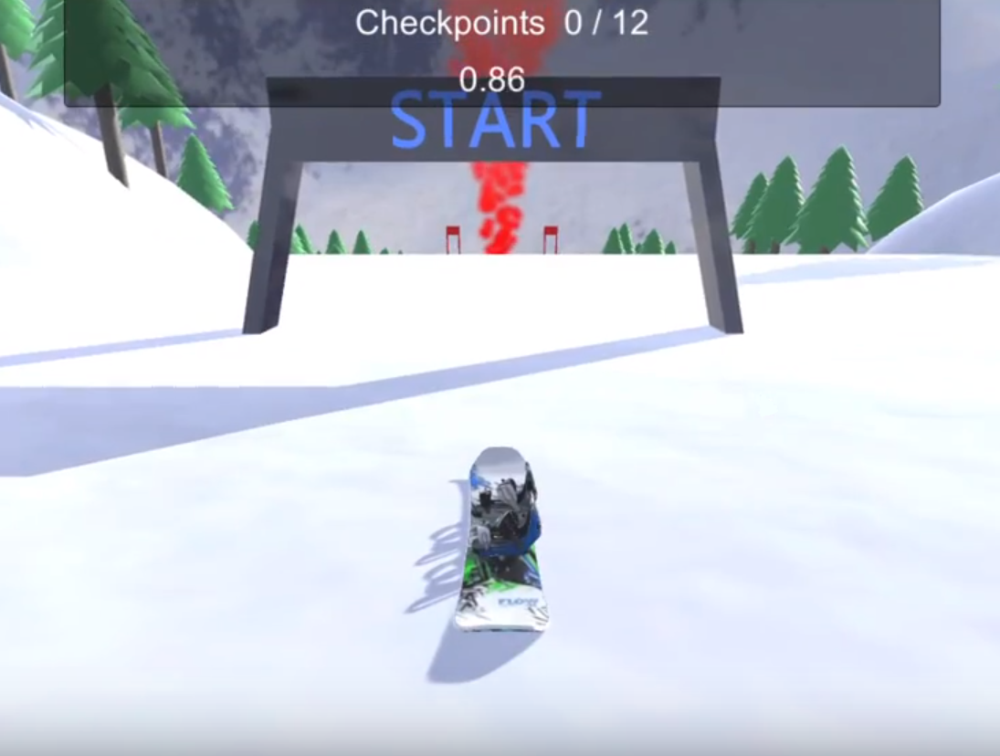Start at the top of the mountain and race your way down!
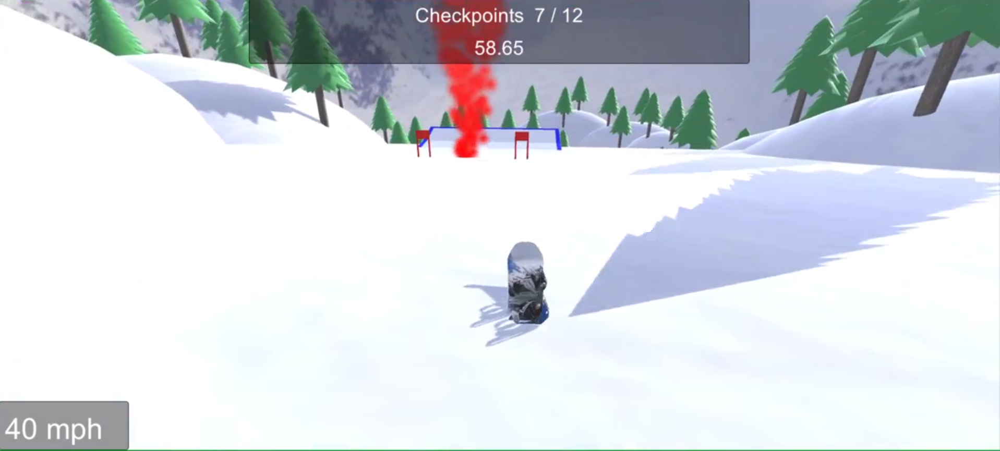The next gate will have a red smoke plume to help you identify where to go. There's also a jump towards the end of the course!
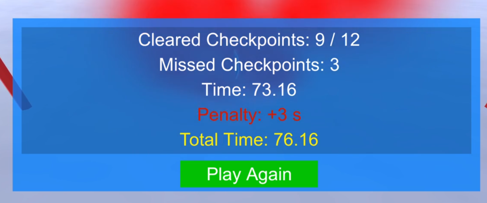When you cross the finish line, your total score is the time you took with an added penalty of +1 second for each gate you missed
Audio Visualizer
About
This web app allows you to play music and visualize the beats and waveforms of the sound. You have full control over the visuals including what type of display you want, colors, visual effects, and audio effects. Feel the bass with an option to turn on a screen shaking bass effect. Customize the experience to your liking to fully embrace the music!
Features
- 8 Songs to choose from with custom audio controls
- Screen shaking bass option
- Particle effects for aesthetic
- Controls for audio effects
- Adjust background colors
- Option to enable fullscreen mode
- Main waveform pattern displayed as mirrored bars around a circle
- Option to enable a line waveform
Development
I had way too much fun with this project. As a big fan of music, I love watching videos of my favorite songs that incorporate the song's waveforms. I really wanted to go above and beyond and make a really cool experience with this. Built using JavaScript and web audio technologies, each "frame" of the song is divided into "buckets" based on sound frequencies. Each of these bucket values is then translated into how big each bar appears. The plethora of customization controls alter things like how tall or wide the bars should be, audio effects like reverb, and visual effects such as tinting the background.
I really wanted to make the UI look clean and modern. This was actually my first true website built with JavaScript so there are plenty of things I would like to go back and change in terms of the UI. A lot of the UI interaction is kind of hacky and not done effectively. After learning more about JS and web development, I am eager to go back and modernize some of my code. There's a few glitches with the custom audio controls but overall I was incredibly pleased with the final product. It was highly satisfying to sit and watch and listen to my work perform in front of me.
Photo Gallery
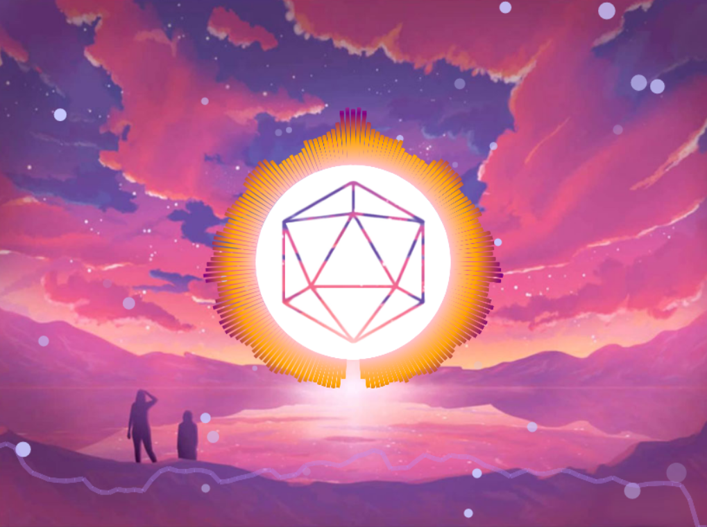The bars around the middle are mirrored on both sides and represent the frequencies of the song. The purple line is another view of the frequencies
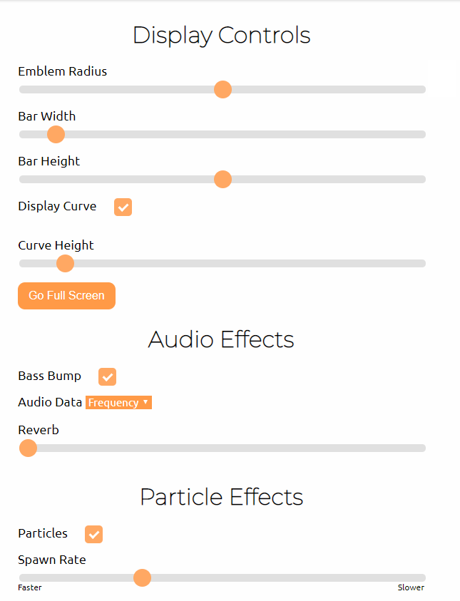Some of the controls you can play with
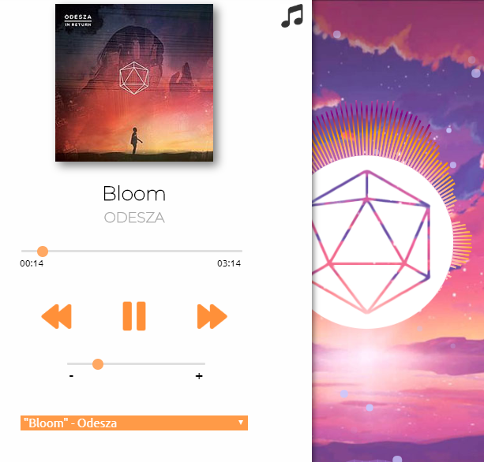The custom audio player interface
Tanks
About
Battle your friends in a 1 vs. 1 game of Tanks! Move your tank back and forth and select the right angle and shot power to counteract the wind and hit your opponent. First player to land 3 shots is the winner!
Features
- Local Versus Multiplayer Gameplay
- Each player can name themselves and choose a tank color
- Random Stage Generation
- Animations and Particle Effects
- Background Music and Sound Effects
- All made through Canvas
Development
This project was to practice using Canvas while also making a game. I choose a 2D tank game since the graphics are relatively simple and physics are my speciality. I was most happy with how clean and concise the code for the game is. I used the Module Pattern to help clean up the code and break the calls down into chunks. The main update basically comes down to update the tanks, update the bullet, and check for collisions.
I initially aimed to do terrain deformation when the bullets hit the ground, but soon realized this drastically complicated many other aspects of the game. Instead, I created a random terrain generaton algorithm that creates a new stage for each playthrough. It took some tweaking and playing around to constrain the values to make a balanced and playable stages. Overall I'm fairly happy with the gameplay, however the site design could use some work. Creating UIs in Canvas was a little tricky.
MoodFood
About
In the mood for a specific type of food? MoodFood will help you locate places nearby to fulfill your cravings! Search by your current location, or enter a custom location to find food. Sort and compare places by pricing or rating.
Features
- Utilizes the Google Maps and Zomato APIs
- Utilizes Location Services
- Sort by Rating or Price
- Google Material Design
- View Results in a list view or on the map
Development
My initial plans for this app unfortunately did not come to fruition. I initially intended to make an app to search the menus of restaurants to locate specific foods you were looking for. I found the Zomato API and was under the impression it had the power to cross-reference menus. However, it turns out that feature was only avaiable in Czechoslovakia. So I had to salvage together the rest of the project and it will only show results that include your query in the title of the restaurant. In essence, I basically created another Google Maps to find restaurants.
Out of all my apps, I am least happy with this one. Mostly because the idea didn't fully work out, but also because the site design isn't the best. After scrambling to salvage the project, I didn't have a whole lot of time or care to clean up the design. While I do like some of the Google Material designs I created like the text boxes, the responsiveness of the site is pretty bad. Layouts and font sizing need to be adjusted and the color scheme is a little harsh.
Developer
Rochester, NY
Jan 2020 - Mar 2020
My title at eLogic was open ended to allow me to float between different development mediums. I primarily worked as a mobile developer on the IoT (Internet of Things) team using Xamarin and C# to create and test apps for clients. I started off writing automated tests to run in Microsofdt App Center in order to test the UI. I also took on the role of deploying QA builds to the client through App Center for them to test. I later moved on to bug fixing. Aside from Xamarin, I also did a bit of Power Apps development. This was towards the end of my time at eLogic so I didn't get far with it. My employment was unfortunately terminated early due to the COVID-19 pandemic of 2020.
Skills Utilized
- Xamarin
- C#
- XAML
- Automated Testing
- Microsoft Visual Studio
- Microsoft App Center
- Microsoft Power Apps
- iOS / Mac Development
- IoT Development
Web Developer Intern
Rochester, NY
Jun 2018 - Dec 2018
One major part of the LiveTiles brand is their intranet site building platform. The individual apps and widgets you add to the site page are known as "tiles". As a developer intern, my main task included refreshing outdated and non-functional tiles to a more modern standard. Often times I would rebuild the tiles from the ground up and design the front end as well program the backend myself. I was also involved with creating demo pages for potential customers, providing support to customers who implemented my tiles, as well as create custom tiles for different customers.
Skills Utilized
- HTML
- CSS
- JavaScript
- AJAX
- Bootstrap
- Microsoft Sharepoint
- Microsoft Azure Bot Framework
- Microsoft Flow
- Various API Integrations
- Customer Interaction
Front End Developer Intern
Princeton, NJ
Jun 2017 - Aug 2017
My primary task at Siemens was to prototype a new application to be used by railroad technicians. The app, an "IDE for programming signal box logic", was created as a WPF Application using C# in Visual Studio. As the sole programmer, I would work with a UX lead and UI designer to turn the concepts into reality. The design was insipred by the Microsoft Office suite and built to be a more modern UI over cluttered industrial style UIs. My team worked with a user group of real technicians to gain feedback and suggestions as we built out the program.
Skills Utilized
- C#
- XAML
- WPF Applications
- Microsoft Visual Studio
- User Group Interaction
- Collaboration with Designers
Consultant
Remote
Jan 2021 - Oct 2022
While my full-time title at LiveTiles was "Consultant", I was a web developer first and foremost. The majority of my work was developing custom applications customers ordered as well as prototyping software our product team would later implement. I was the sole developer on the U.S. Professional Services team so at the end of the day it was up to me to build and deliver great experiences directly to customers. The projects were primarily SPFx applications and React based web apps as plugins for LiveTiles's Reach platform.
Skills Utilized
- TypeScript
- React
- JavaScript
- HTML / CSS
- Bootstrap
- Microsoft Sharepoint
- SPFx
- Microsoft Flow
- Customer Interaction
Basketball Arcade
About
Personal project to get more experience with Blender and asset creation from scratch. All models and programming in the world are done by myself. Features two different games: Shot Clock and Connect 4
Shot Clock
Race against the clock to score as many baskets as you can
Connect 4
Play against a friend in a game of Connect 4 basketball. Your pieces enter the board depending on which basket you score on. Features full networking multiplayer
Development
All the models were made in Blender from scratch. Was a good learning experience to get more comfortable with the interface as well as reinforcing modeling and UV unwrapping skills. The world was assembled in Unity utilizing the VRChat SDK. Programming was done using VRChat's Udon graph system. Connect 4 was the biggest struggle due to implementing full multiplayer for it. It was an eye opening experience to switch my programming logic from "Make it work" to "Make it work for everyone else too". I'm proud with how it turned out and the skills I gained from the project
Demo
Bunker Hallway
About
Personal project to continue learning Blender and more advanced Unity rendering techniques. The scene is based on a level from the game Sons of the Forest. All the models (except the Ottomans) were made by myself in Blender. The scene features baked lighting and reflection maps, post-processing, and light probes.
Development
This world was made for VRChat and was a particularly fun project to work on. Taking a good looking scene from a game and reverse-engineering it was an intriguing challenge. I learned a lot about using Blender itself as well as best practices for 3D modeling. Same goes for Unity and baked lighting. I'm very pleased with how the end product turned out and I'm eager to bring more levels from this game to VRChat.
Photo Gallery
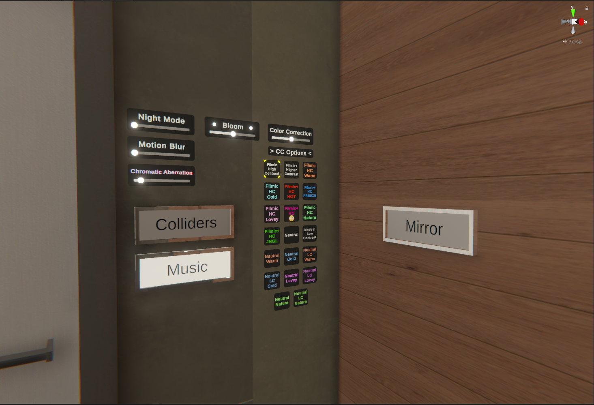A variety of settings are available to the player to customize their experience including post-procesing options
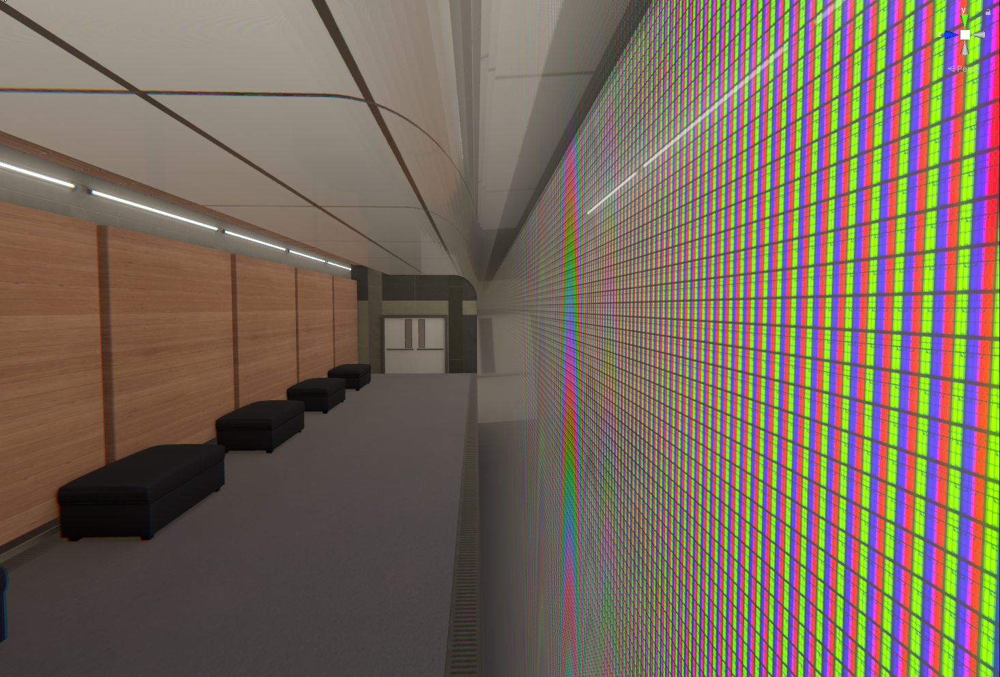The light wall has a shader that when viewed up close shows "pixels". Credit to Mochie's Shaders for the effect
Lightmap Swapper
About
My first publicly released asset for VRChat world creation: Lightmap Swapper! This package allows for swapping of baked lightmaps and reflection probes at runtime. I also included a light switch prefab that includes sounds, animations, and logic to allow for desktop interaction as well as VR touch controls with haptics.
Development
When developing my work-in-progress world, I really wanted to have multiple lighting scenarios but didn't want the perfomance hit of real-time lighting. I did some research and couldn't find any free packages that allow for swapping of lightmaps. So I decided to make my own! The scripts are specifically designed for VRChat worlds so they are writted in UdonSharp. However, the scripts could be easily modified to work with regular Unity development.
The script get a reference to every static object in the scene that uses a lightmap as well as any reflection probe. When a swap should occur, it loops through all the referenced objects, changes the lightmap to next one, and re-bakes all reflection probes to the new lighting scenario.
Cozy Obby
About
My biggest VRChat project yet, Cozy Obby is a game world featuring multiple obstacle courses with leaderboards and speedrunning features as well as a central hangout area. The world received great reception reaching 20,000+ visits and 2,500+ favorites in just 3 days, even reaching the top of the "New and Noteworthy" category and breaking into the "Popular" tab.
Development
This world took about 4 months of development time. The first focus was on making a robust obstacle course system that was prefabable and expandable. A manager script handles most of the heavy lifting: holding the timer, checkpoint counter, calculating time splits between checkpoints, respawns, and leaderboard logic. Individual components like bounce pads, lava blocks, and glide walls handle collision detection on their own and call to the manager. The scripts were written using UdonSharp, VRChat's version of C#.
After the Easy difficulty course was made I shifted my focus to building the central hangout hub. The house structure and props were all made in Blender then textured in Unity. The hub features 4 areas: a fire pit lounge, a large couch with TV video player and queue system, billiards table with custom leaderboard, and a cozy bedroom. The billiards leaderboard was built from the parkour courses' leaderboard but enhanced for better architecture. All leaderboars are synced over the network and include crowns above the heads of the players at the top of each respective leaderboard.
Photo Gallery
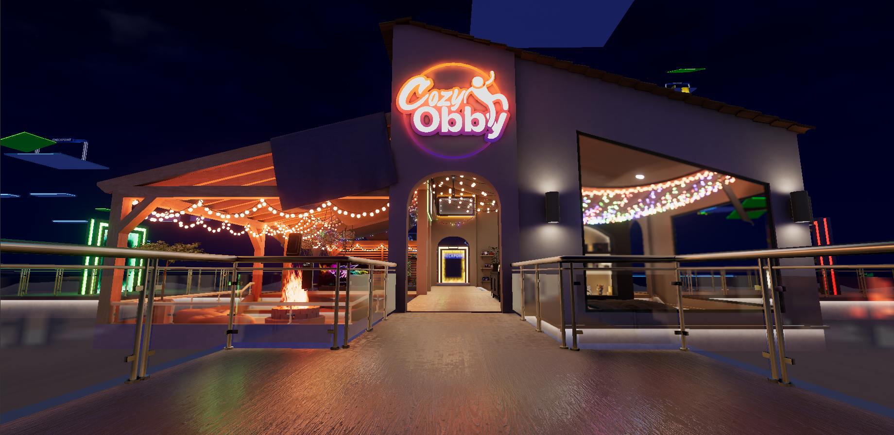The entrance view to the world
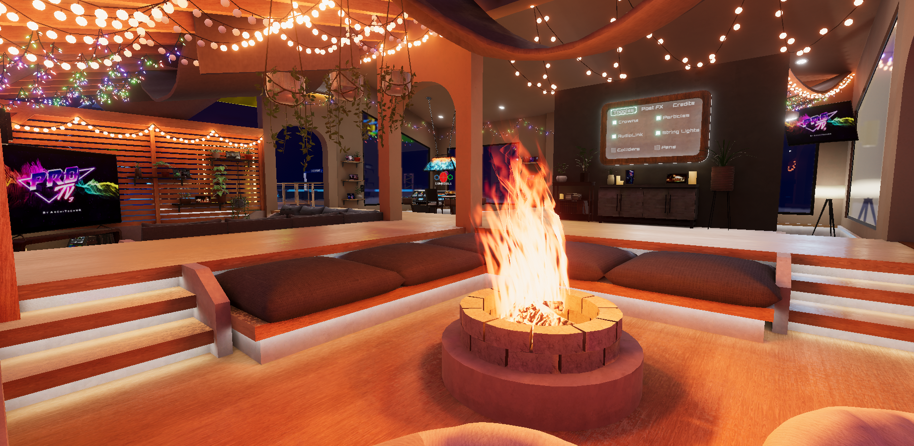View from the corner of the fire pit area
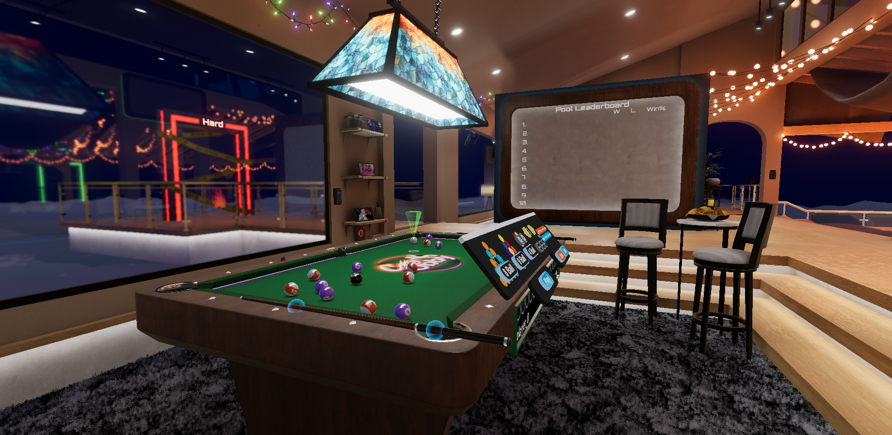The pool table with leaderboard in the back
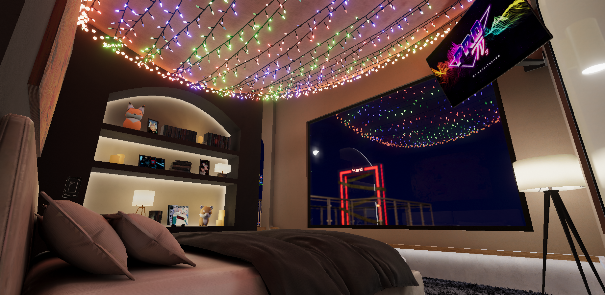Bedroom area
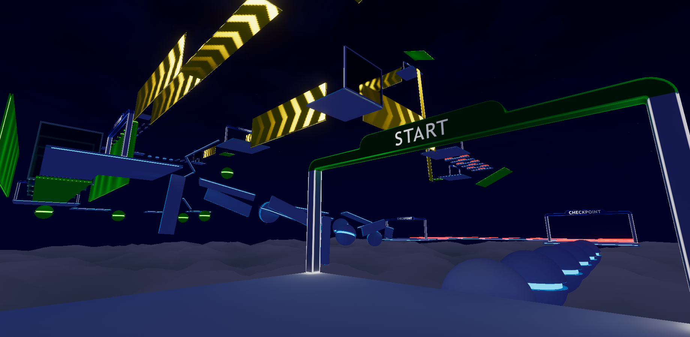View from the start of the medium difficulty course
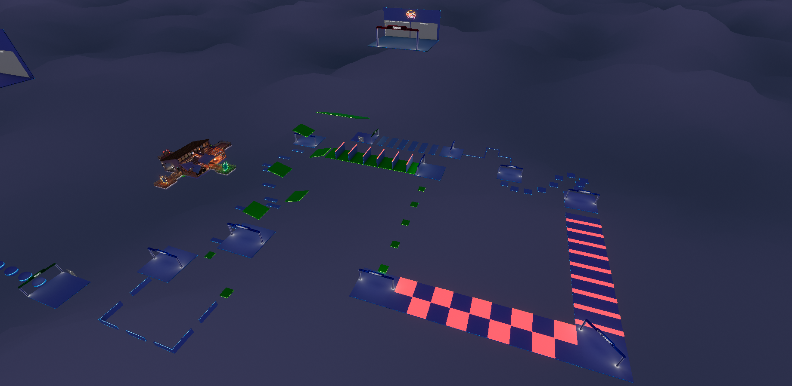Aerial view of the easy difficulty course